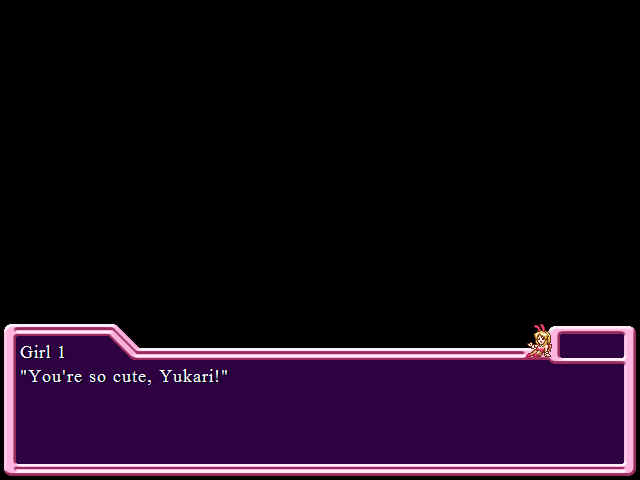
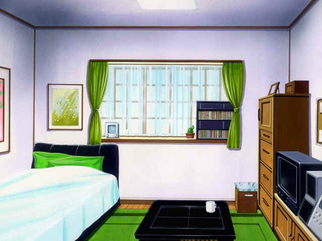

With a suprising lack of, you know, chicks.

I haven't felt excited for a long time. My school is one of the most prestigious schools in this area: both teachers and students are good. It's always good to have many friends.
This guy sounds like a winner already.
My name is Yukari Fujisawa. I'm a senior at Kinozaka High School. Since this spring, I've started living by myself because my family had to move, due to my father's job. I decided to stay here because I have school and I want to go to college here.
My hobbies are reading, raising tropical fish, and I sometimes practice judo. My grades are pretty good (I think...), but I don't have good reflexes. (I can't ride a bicycle...)
I'm not picky about food. I don't hate any particular person, and I'm not hated by anyone (I hope). I don't believe in ghosts, monsters, or those kinds of stuff.
In the future, I want to be an ordinary businessman, or I want a job that has something to do with tropical fish.
Christ, give us your whole life story please. Only about a third of this information ever comes up again later. Tl;dr version: I LIVE ALONE, I SOMETIMES PRACTICE MARTIAL ARTS AND I'M ABSOLUTE APESHIT FOR TROPICAL FISH.
 : It's sad to say, but I don't look my age. I'm not manly at all. I guess judo hasn't helped my physique.
: It's sad to say, but I don't look my age. I'm not manly at all. I guess judo hasn't helped my physique.  I don't think you want to know my bust, waist, or hip sizes. However, people often ask me.
I don't think you want to know my bust, waist, or hip sizes. However, people often ask me.You mean like, randomly, on the street? "Hello there! What's your bust size?"
: You'll say, 'how come?' Because of my figure and feminine appearance.Ah, the good old "look like a chick" method that anime loves so much. All you need is martial arts training and you can get syndicated on Adult Swim. ...wait, you've got that. I'll look up their number.
Have I ever liked this feminine face? Never! People thought I was a girl when I was little. My mom forced me to wear a girl's kimono for the Seven-Five-Three Festival, boys gave me chocolate on Valentine's day, and I've been lead to ladies restrooms or locker rooms many times.
You know, if I were Yukari, I would've totally taken advantage of all of this. "Wait, this is the ladies changing room. Sure, yeah, that's totally where I wanted to go!"
: And...Insert fade-away to memory...


 1: "Ha-ha-ha! You look better in a girl's uniform than in a boy's uniform."2: "That's right. I'm sure you'd look good in a frilled dress."
1: "Ha-ha-ha! You look better in a girl's uniform than in a boy's uniform."2: "That's right. I'm sure you'd look good in a frilled dress." 1: "I'm happy to have a friend like you, but it's difficult to see you as a boy..." 2: "Really? I didn't know that you saw him like that."1: "N,no...He's a very good friend."2: "Right? Ha-ha-ha."
1: "I'm happy to have a friend like you, but it's difficult to see you as a boy..." 2: "Really? I didn't know that you saw him like that."1: "N,no...He's a very good friend."2: "Right? Ha-ha-ha."
The game does this a LOT. Twice in a row. Yukari has a lot to think about ALL OF THE FUCKING TIME.
I'm used to hearing girls say things like this. However this time, it's a different story because I like this girl...She's one of the most gorgeous girls in our school. I know she's far beyond my reach.
But I hope she sees me as a boy at least.Yeah she pretty much JUST said that she didn't.
It's the beginning of summer. The sun starts to shine strong. Looking up at the bright sky, I feel empty going home by myself.
: "I can't argue with her, though..."I sigh and slowly walk home.

Welcome to the pad. Aside from the bathroom, which we'll see later in the game. Heh heh HEHHEHHEHH

And this main room, there's not really much to look at. I think it's a studio at best.
: "I'm back."Nobody answers. I feel lonely. I have a big family. My little sisters were so annoying, but I miss them now...Only three Angelfish welcome me home. I was the one who wanted to stay here, so I can't complain.
I put down my bag and hang up my jacket. It's too hot to go outside with a jacket.
WORDS WORDS WORDS
We'll change our uniforms to summer ones soon. My slim figure will be even more noticable...
And then the boys will really swoon. :swoon:
: "Hah..."I sit on my bed and look at the papers piled up on the floor. I don't read them everyday. "I like to read papers, but not everyday...I wish they would deliver papers every other day or once every three days..."
I don't know why he chose to say that last sentence out loud.
We can always see the news on TV or through the Internet. "However, if I stop subscribing to the paper, they'll keep nagging me for subscriptions..." That'd be annoying. I feel tired just thinking about it.
I'm going to toss out a wild guess here and say that Yukari's still a virgin.
: If I were pushy like others, people wouldn't say I look like a girl...I tend to worry about people too much. I don't think I can be a sales person.: "It's not good to think so negatively!"That's right, Yukari! You tell those angelfish who's boss!
I guess I'm still in shock. I have to do something to be treated as a man.
: "Should I start practicing judo again? Or should I get a physical part time job?"A flier flutters down from a bundle of papers.
It's a gift from God!
: "Part time job information...huh?"My parents send me enough money every month. All I want are books and stuff for my tropical fish... However, those are not cheap.
: "Maybe... I should get a part time job." I've never done it, and I have enough time. Studying won't help me to become macho.
My goals for physical labor are: 1. Train my body, 2. Save money to buy a bigger aquarium, 3. ...I'll think about it later!
: "This is the 'To Be A Man Project' by Yukari Fujisawa!"I'm having flashbacks to Mulan right now. Maybe I should just call him Ping throughout the rest of the damn story.
I'll change by the end of summer. ....... As a result, I might get a girlfriend. Needless to say, that's my third goal.
Next time: An actual girl finds her way into the story!